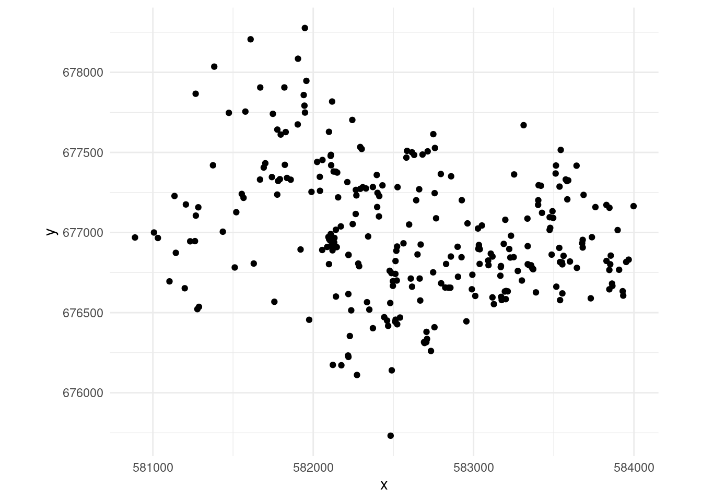

?spatstat.data::gorillas and Funwi-Gabga and Mateu (2012) for more information.
mgcvDavid L Miller
June 13, 2024
This article is based on the (excellent!) paper Dovers et al. (2024) (which I reviewed). Go read that paper! This is just a quick note on doing this stuff with a slightly different view on the world.
The general idea here is that we want to fit a model to location data, i.e., \((x, y)\) locations in space, where the data we have is just the presences of things we saw. Think: making a map of where trees are based on observations of trees. There are specialized ways of doing this but there’s also a neat trick to do this in any GLM-ish1 framework that interests you.
On a side note, I did write this stuff aaaages ago and then neglected to put it anywhere (like a journal), so this also a way to get that stuff out there (thanks to Elliot and co, at least I don’t have to deal with a journal now!).
Let’s say we have data, which are the locations in space of things we’re interested in: animals, insects, trees, etc. We want to build a spatial model of these locations to describe how their occurrence varies over space. The kind of model we need for this are Poisson processes. There are lots of variations on these kinds of models, the version we’re interested in here are log-Gaussian Cox processes2.
?spatstat.data::gorillas and Funwi-Gabga and Mateu (2012) for more information.
More formally, say we have locations of \(m\) observed locations (“points”) \(\left\{ \mathbf{x}_{i};i=1,\ldots,m\right\}\) in the region \(\Omega\) occur according to some intensity function \(\lambda(\mathbf{x},\boldsymbol{\theta})\). The inhomogeneous Poisson process likelihood (Illian et al., 2008, eqn. 3.4.4) for this data is:
\[\begin{equation} \mathcal{\mathcal{L}}_{\text{PPM}}(\boldsymbol{\theta};\left\{ \mathbf{x}_{i};i=1,\ldots,m\right\} )=\frac{\prod_{i=1}^{m}\lambda(\mathbf{x}_{i},\boldsymbol{\theta})}{\exp\Lambda(\boldsymbol{\theta})}=\frac{\prod_{i=1}^{m}\lambda(\mathbf{x}_{i},\boldsymbol{\theta})}{\exp\int_{\Omega}\lambda(\mathbf{x},\boldsymbol{\theta})\mathnormal{\mathrm{d}}\mathbf{x}}, \label{eq:pp-lik} \end{equation}\]
so the log-likelihood is:
\[\begin{equation} l_{\text{PPM}}=\log_{e}\mathcal{\mathcal{L}}_{\text{PPM}}(\boldsymbol{\theta};\left\{ \mathbf{x}_{i};i=1,\ldots,m\right\} )=\sum_{i=1}^{m}\log_{e}\lambda(\mathbf{x}_{i},\boldsymbol{\theta})-\int_{\Omega}\lambda(\mathbf{x},\boldsymbol{\theta})\mathnormal{\mathrm{d}}\mathbf{x}. \label{eq:logppm} \end{equation}\]
We might think about directly optimising this likelihood, but we have another option…
mgcvThe central piece in fitting a Poisson process in mgcv is a trick called the Berman-Turner device (Baddeley and Turner, 2000; Berman and Turner, 1992). This allows us to approximate the likelihood in (\(\ref{eq:logppm}\)) as part of a generalized linear model (or similar) fitting procedure. That means that we can write our model in a particular way in standard software.
This is good for a few reasons. One being that we already understand how to fit a GLM/GLMM/GAM – that’s great. Second is that we can borrow the cool stuff that we have in our toolbox from these methods – random effects, splines etc.
We can re-write the integral above as a quadrature approximation, so
\[\begin{equation*} \Lambda(\boldsymbol{\theta})=\int_{\Omega}\lambda(\mathbf{x},\boldsymbol{\theta})\mathnormal{\mathrm{d}}\mathbf{x}\approx\sum_{j=1}^{J}w_{j}\lambda(\mathbf{s}_{j},\boldsymbol{\theta}) \end{equation*}\]
with quadrature evaluations (according to some scheme, see below) at \(\mathbf{s}_{j}\) and corresponding weights \(w_{j}\). We can then re-write (\(\ref{eq:logppm}\)) as:
\[\begin{equation*} l_{\text{PPM}}\approx\sum_{i=1}^{m}\log_{e}\lambda(\mathbf{x}_{i},\boldsymbol{\theta})-\sum_{j=1}^{J}w_{j}\lambda(\mathbf{s}_{j},\boldsymbol{\theta}). \end{equation*}\]
Then, concatenating \(\mathbf{x}_{i}\) and \(\mathbf{s}_{j}\) (i.e., combining the observations and quadrature points) into a new \(\mathbf{x}_{i}\), we can re-write this as Baddeley and Turner (2000), we can combine the two terms into one index:
\[\begin{equation} l_{\text{PPM}}\approx\sum_{i=1}^{m+J}y_{i}\log_{e}\lambda(\mathbf{x}_{i},\boldsymbol{\theta})-w_{i}\lambda(\mathbf{x}_{i},\boldsymbol{\theta}), \label{eq:ppm-approx} \end{equation}\]
where
\[\begin{equation*} y_{i}=\begin{cases} 1 & \text{if }\mathbf{x}_{i} \text{ is an observation},\\ 0 & \text{if }\mathbf{x}_{i} \text{ is a quadrature point}, \end{cases} \end{equation*}\]
and extending the \(w_{i}\) such that
\[\begin{equation*} w_{i}=\begin{cases} 1 & \text{for } i=1,\ldots,m,\\ w_{j} & \text{for }i=m+1,\ldots,m+J \text{ and }j=1,\ldots,J. \end{cases} \end{equation*}\]
This looks very close to the form for a Poisson regression with offset \(w_{i}\), we have a linear predictor of the form \(\eta_{i}=\log_{e}w_{i}+\mathbf{x}_{i}\boldsymbol{\theta}\):
\[\begin{align} l_{\text{PO}}(\boldsymbol{\beta};\mathbf{x}_{1},\ldots,\mathbf{x}_{n};y_{1},\ldots,y_{n}) &=\sum_{i=1}^{n}\left(y_{i}\eta_{i}-e^{\eta_{i}}-\log_{e}\left(y_{i}!\right)\right)\\ &=\sum_{i=1}^{n}\left(y_{i}(\log_{e}w_{i}+\mathbf{x}_{i}\boldsymbol{\theta})-e^{\log_{e}w_{i}}e^{\mathbf{x}_{i}\boldsymbol{\theta}}-\log_{e}\left(y_{i}!\right)\right)\\ &=\sum_{i=1}^{n}\left(y_{i}(\log_{e}w_{i}+\mathbf{x}_{i}\boldsymbol{\theta})-w_{i}e^{\mathbf{x}_{i}\boldsymbol{\theta}}\right) \label{eq:poisson-reg} \end{align}\]
Note that since \(y_{i}\in\{0,1\}\), \(y_{i}!=1\Rightarrow\log_{e}\left(y_{i}!\right)=0\) hence we lose the last term in the second line. So letting \(\lambda(\mathbf{x}_{i},\boldsymbol{\theta})=\exp(\log_{e}w_{i}+\mathbf{x}_{i}\boldsymbol{\theta})\) we have that (\(\ref{eq:poisson-reg}\)) is equivalent to (\(\ref{eq:ppm-approx}\)). Note that sometimes this derivation is via using weights rather than using the offset. This approach is generally referred to as the “Berman-Turner device”.
So to fit the inhomogeneous Poisson process model in (\(\ref{eq:pp-lik}\)), we can fit a Poisson GLM with the following components:
Generating an efficient and accurate quadrature scheme for the given problem can potentially be tricky. In one dimension generating a mesh for the quadrature is pretty simple, we can just make an evenly-spaced grid over space (or the range of the covariate). In higher dimensions with uneven data this can be more complicated. Warton and Shepherd (2010) suggest increasing grid complexity until convergence of the maximum likelihood estimate to ensure that the integral is approximated correctly. Simpson et al. (2016) suggest that regular grids are computationally wasteful and suggest the use of triangulation for efficiency.
If you’ve spent some time in the point process world, you’ve probably seen the gorilla nests example (Funwi-Gabga and Mateu (2012) gives more information about the data). We can start by producing Figure 1 :
library(fmesher)
library(ggplot2)
library(spatstat.data)
# set up the data
data(gorillas,package="spatstat.data")
dat <- data.frame(x=gorillas$x, y=gorillas$y)
# just grab the dry season data for simplicity
dat <- dat[gorillas$marks$season=="dry", ]
# plot that
ggplot(dat, aes(x=x,y=y)) +
geom_point() +
coord_equal() +
theme_minimal()The first step we need to undertake is to construct the mesh. Here we follow the Simpson approach and use a mesh (triangulation) provided by fmesher4 as the integration scheme for our model. In particular we can use fmesher::meshbuilder() (a Shiny app) to graphically set up and assess the utility of a mesh for a given dataset.
Fortunately as this is a spatstat dataset, we already have a $window$bdry that gives the boundary polygon we want to use (note that these polygons don’t have the same first/last elements, so they don’t plot as a closed loop). If we didn’t have that we could use an sf function like st_convex_hull to construct a convex hull around our points, then perhaps st_buffer to make a slightly larger area.
We can feed this polygon to the fm_segm() function in fmesher to generate a boundary that fmesher understands, then use fm_mesh_2d to generate the mesh.
Let’s take a look at the mesh…
With the mesh setup, we need to work out the centroids and areas of the triangles. We can do this using some stored information in the mesh object and some basic maths. I’ve written this into the get_grid function below for ease of use later on.
get_grid <- function(mesh){
# get the finite elements
fem <- fm_fem(mesh, order = 1)
# areas
w <- fem$ta
# get the centroids of the triangles
mesh_locs <- mesh$loc[,1:2]
idx <- mesh$graph$tv
tri_loc <- as.data.frame(t(apply(idx, 1, function(ii){
1/3*colSums(mesh_locs[ii,])
})))
dat <- cbind(tri_loc, w)
names(dat) <- c("x", "y", "area")
return(dat)
}
# get triangle locations and sizes from the mesh
tri <- get_grid(mesh)tri is a 3 column matrix with location in the first 2 columns and area in the final one:
x y area
1 581857.3 678547.6 30298.15
2 585036.4 675553.8 17351.60
3 582956.8 678882.9 24491.24
4 582096.7 674272.4 18901.22
5 581981.2 675168.1 14841.59
6 581755.2 674451.9 21700.33Now we have our data and our integration grid5, we can think about getting the data.frame together that we need for modelling.
From the above we need the following columns in our data:
x and y)area)presence)# add area column to the data
# this is just a small value
dat$area <- 1e-6
# response data
dat$presence <- 1
tri$presence <- 0
# bind these two together
ppm_dat <- rbind(dat, tri)
# need the log area
ppm_dat$larea <- log(ppm_dat$area)
# what does that look like
head(ppm_dat) x y area presence larea
1 582518.4 676886.2 1e-06 1 -13.81551
2 581823.0 677422.7 1e-06 1 -13.81551
3 582131.0 676937.9 1e-06 1 -13.81551
4 582111.9 677420.0 1e-06 1 -13.81551
5 582585.1 677509.7 1e-06 1 -13.81551
6 582302.3 677521.6 1e-06 1 -13.81551Now we can fit the model, using the usual gam apparatus:
Loading required package: nlmeThis is mgcv 1.9-3. For overview type 'help("mgcv-package")'.pp <- gam(presence ~ offset(larea) + s(x, y, bs="tp", k=40),
data=ppm_dat, method="REML", family=poisson())
summary(pp)
Family: poisson
Link function: log
Formula:
presence ~ offset(larea) + s(x, y, bs = "tp", k = 40)
Parametric coefficients:
Estimate Std. Error z value Pr(>|z|)
(Intercept) -17.689 2.304 -7.676 1.64e-14 ***
---
Signif. codes: 0 '***' 0.001 '**' 0.01 '*' 0.05 '.' 0.1 ' ' 1
Approximate significance of smooth terms:
edf Ref.df Chi.sq p-value
s(x,y) 19.29 22.06 237.3 <2e-16 ***
---
Signif. codes: 0 '***' 0.001 '**' 0.01 '*' 0.05 '.' 0.1 ' ' 1
R-sq.(adj) = -2.11 Deviance explained = 7.6%
-REML = 6751.7 Scale est. = 1 n = 1824Note that we can do things like assess the value we gave k (the maximum basis size) but things like the adjusted-\(R^2\) won’t make sense. Also note that you can’t do model comparison (via REML score, AIC etc) between mesh configurations as you’re changing the data in that case.
We can now make a prediction. Before we do that, it’s important to think about what the prediction means. If we just use predict() on our model, then we are getting values of the \(\log\) intensity, \(\log_e \lambda(x,y)\) for whatever \(x\) and \(y\) we supply. Exponentiating gives us the intensity, but what does that mean? Something like “\(\lambda (x,y) \mathrm {d} x\mathrm {d}y\) is the infinitesimal probability of a point of a Poisson point process existing in a region of space with volume \(\mathrm {d} x\mathrm {d}y\) located at \((x, y)\)”6. So we can use \(\lambda (x,y) a\) to give a probability, if we let \(a\) be the area we’re interested in around \((x,y)\).
So let’s setup a grid to predict over and make the prediction:
# make a prediction
# set up the prediction grid
npred <- 100
pred <- expand.grid(x = seq(min(dat$x), max(dat$x), len=npred),
y = seq(min(dat$y), max(dat$y), len=npred))
# areas
pred$larea <- log(diff(pred$x)[1] * diff(pred$y)[npred])
# make the prediction
pred$p <- exp(predict(pp, pred))
# range of values
range(pred$p)[1] 3.643101e-07 1.567722e-01Finally we can plot that using ggplot2
So this stuff is quite basic compared to what’s going on in the Poisson process literature at the moment, but hopefully it gives some ideas of where we could go and again shows that we can use mgcv for more than we expected.
The above starts to make mgcv suspiciously like inlabru: we fit a \(\log\)-Gaussian Cox process, using a triangulation and smoothing, with empirical Bayesian methods. We could use a Mat{'e}rn covariance approach via a stochastic partial differential equation method in mgcv using methods in Miller et al. (2019).
Note that importantly, a simple Poisson process (LGCP) will not work (in a very theory-centric sense) if you have repeated measures at the same locations. For example if you had fisheries data where you go to exactly the same trawl locations. This has something to do with the probability of two observations being at the same point in space being zero7.
My original work in this area was heavily influenced by discussions with Finn Lindgren and Andy Seaton. David Borchers provided the mesh parameters. Thanks also to Philip Dixon for asking me to review the paper!
Generalized linear model, generalized linear mixed model and of course generalized additive model.↩︎
That is, where we describe the variation in space using structured random effects that are (multivariate) normal distributed.↩︎
I’m using “integration grid” and “mesh” interchangably here.↩︎
A property of being something called a simple point process. Janine Illian once tried to explain this to me but I’ve forgotten now. Sorry Janine!↩︎